12 Daten visualisieren
Fünf verschiedene Visualisierungsmöglichkeiten werden wir heute kurz anschauen, die alle ein ganz anderes Ziel haben, um Daten darzustellen.
12.1 Histogramme
Histogramme werden üblicherweise dazu genutzt, um Verteilung und Häufigkeit einer Variable aufzuzeigen, wie beispielsweise beim Geburtsjahr. Ein Histogramm ist für kontinuierliche Variablen geeignet.
ggplot(data=voto, aes(x=birthyear)) +
geom_histogram(binwidth=5)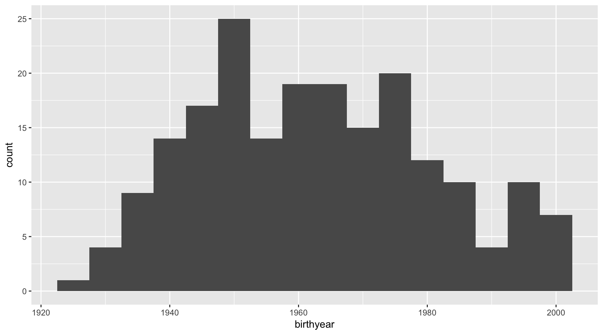
Spezifisch bei einem Histogramm ist der Befehl binwidth=5, mit dem wir definieren, wie breit die Balken sind - in diesem Fall sind es jeweils fünf Jahre, die zusammengefasst werden.
12.2 Bar Graph
Ein Bar Graph sieht zwar ähnlich wie ein Histogramm aus, zeigt aber Quantitäten von kategoriellen Variablen (Faktoren in R-Sprache). Ein visueller Unterschied ist, dass diese Balken einen Abstand haben, anders als beim Histogramm, wo diese aneinander “gebunden” sind, um die kontinuierliche Variable zu repräsentieren.
Beispielsweise können wir so darstellen, wie viele der befragten Personen teilgenommen haben - eigentlich dieselbe Information wie aus table(voto$part), einfach intuitiver interpretierbar.
ggplot(data=voto, aes(x=part)) +
geom_bar()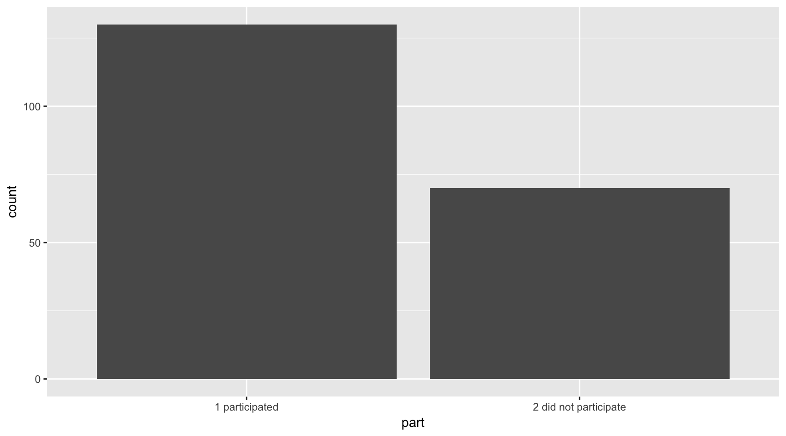
Natürlich ist es auch möglich, mehr als nur eine Variable darzustellen. Eine Variante ist, dieselbe Grafik pro Geschlechtskategorie zu wiederholen, oder mit unterschiedlichen Farben zu arbeiten:
# Ein facet_wrap() macht mehrere Grafiken für alle Kategorien
ggplot(data=voto, aes(x=part)) +
geom_bar() +
facet_wrap(~sex)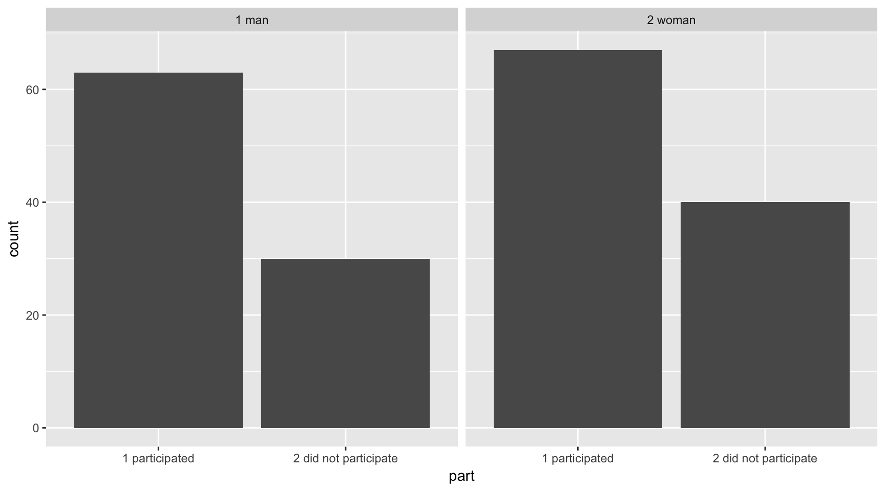
# Mit fill=sex füllen wir die Balken nach Kategorie mit unt. Farben
ggplot(data=voto, aes(x=part, fill=sex)) +
geom_bar()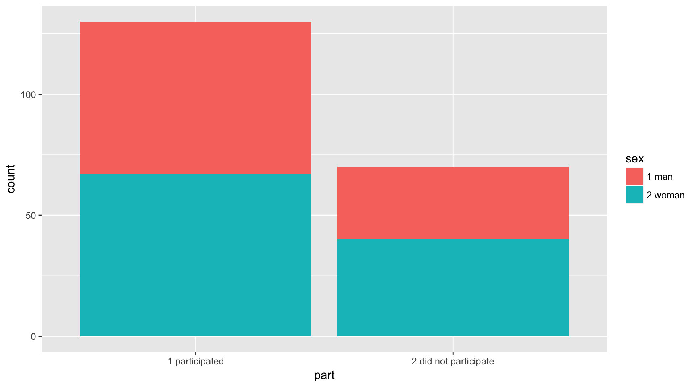
# Zusätzlich führt position="dodge" dazu, dass die Balken nebeneinander sind
ggplot(data=voto, aes(x=part, fill=sex)) +
geom_bar(position="dodge")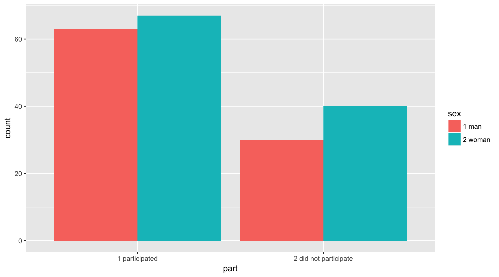
Hier stellt sich immer die Frage, welche Variable wie dargestellt werden soll. Möglich wäre natürlich auch, das ganze umzudrehen, sodass der Anteil an Teilnehmende pro Geschlechtskategorie offensichtlicher ist:
# Hier werden x und y getauscht
# zusätzlich führt position="fill" dazu, dass auf 1 normiert wird
ggplot(data=voto, aes(x=sex, fill=part)) +
geom_bar(position="fill")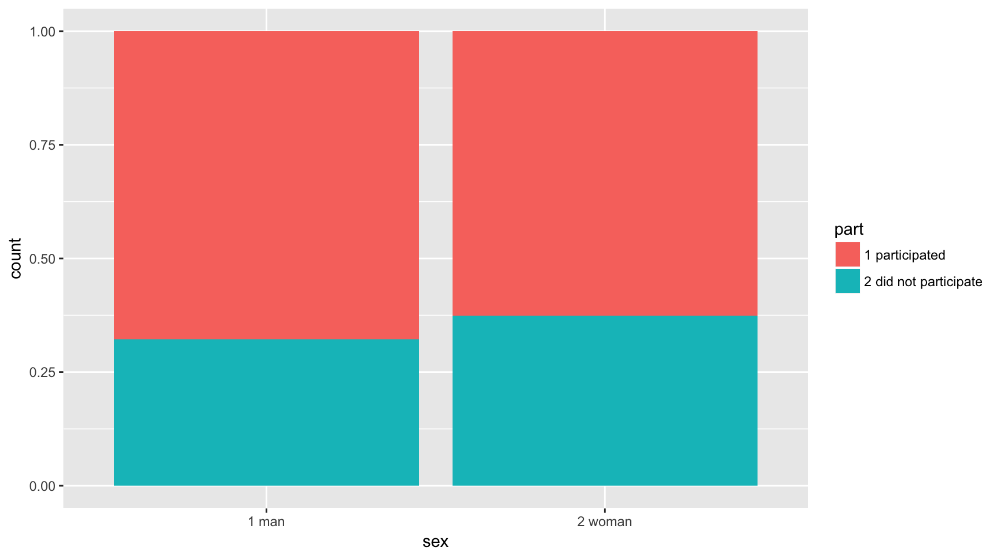
12.3 Scatterplot
Ein Scatterplot zeigt das Verhältnis zwischen zwei quantitativen (meist kontinuierlichen) Variablen an. Diese werden häufig genutzt um visuell festzustellen, ob ein Zusammenhang zwischen zwei Variablen bestehen könnte.
Wollen wir einen Scatterplot darstellen, braucht es ebenfalls x (die erklärende Variable) und y (die zu erklärende Variable), sowie wiederum eine andere geometrische Form.
Da die voto-Daten mit Textwerten anstatt mit numerischen Werten arbeiten, müssen wir die Variable part2 - die Partizipation an 10 Abstimmungen - kurz recodieren. Das machen wir hier in zwei Schritte: zuerst werden die Werte, welche als “weiss nicht” codiert sind, zu sogenannten NA recodiert. Anschliessend nutzen wir die ersten zwei Zahlen pro Wert als Zahlenwerte.
# Hier wird die Variable voto$part2 neu bestimmt als NA,
# falls die Bedingung in der eckigen Klammer zustimmt,
# also falls der Wert der Variable bei 98 ist
voto$part2[voto$part2=="98 don't know"] <- NA
# Anschliessend machen wir eine neue Variable voto$part10, welche
# 1. numerisch ist per as.numeric(),
# 2. einen Substring aus der alten Variable voto$part2 ist per substr(),
# 3. wobei beim ersten Wert gestartet wird, und beim zweiten gestoppt
voto$part10 <- as.numeric(substr(voto$part2, start=1, stop=2))
table(voto$part10)##
## 0 1 2 3 4 5 6 7 8 9 10
## 9 1 6 5 3 13 6 15 29 19 91summary(voto$part10)## Min. 1st Qu. Median Mean 3rd Qu. Max. NA's
## 0.000 7.000 9.000 7.914 10.000 10.000 3# Falls bei einem dieser Befehle Probleme auftauchen, kann per ?substr
# die Hilfeseite aufgerufen werdenJetzt, da wir eine kontinuierliche Variable (das Geburtsjahr) und eine ordinale Variable (die Teilnahmehäufigkeit) haben, können wir diese zwei Werte auf einem Scatterplot darstellen.
# Scatterplots bilden wir mit Punkten (geom_point()), welche x- und y-Wert annehmen
ggplot(data=voto, aes(x=birthyear, y=part10)) +
geom_point()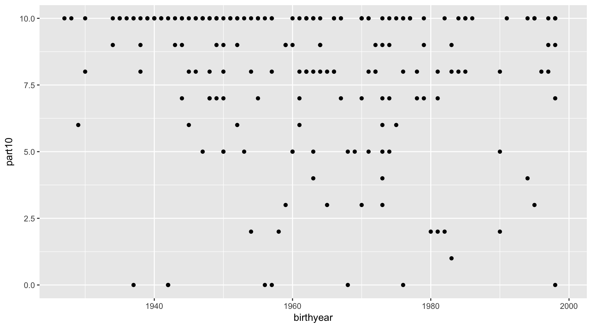
Hier sehen wir jetzt vor allem ein Problem der Umfrageforschung: solche Umfragen nach Abstimmungen erreichen insbesondere Personen, die politisch interessiert sind, und deshalb häufig an Abstimmungen teilnehmen (viele Werte auf der y-Achse sind bei 10), oder dies zumindest in der Umfrage angeben, weil es sozial erwünscht ist, an Abstimmungen teilzunehmen. Wir überschätzen hier wahrscheinlich die tatsächliche Partizipation dieser Leute.
Ausserdem haben wir das Problem, dass wir nicht genau wissen, ob die Punkte jeweils nur eine Person darstellen, oder beispielsweise mehrere. Zumindest dieses Problem können wir grafisch lösen, indem wir ein “Jitter” einfügen, der die Punkte per Zufall um den tatsächlichen Wert streut.
# ein geom_jitter() statt geom_point() bringt Streuung rein
ggplot(data=voto, aes(x=birthyear, y=part10)) +
geom_jitter()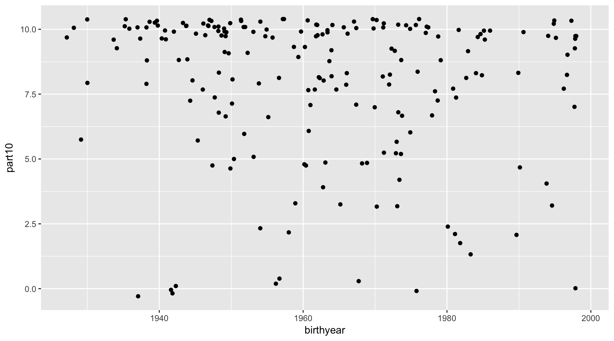
Allerdings ist es immer noch schwierig, eine Tendenz aus dieser Grafik rauszulesen. Damit wir den Zusammenhang besser interpretieren können, ist es möglich, noch eine Regressionslinie einzufügen, welche einen bivariaten Zusammenhang darstellt.
# Wir können direkt einen bivariaten Zusammenhang schätzen
# Scatterplot ergänzt um eine lineare Regressionslinie
ggplot(data=voto, aes(x=birthyear, y=part10)) +
geom_jitter() +
geom_smooth(method="lm")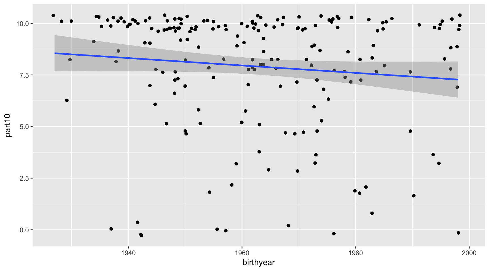
Tatsächlich sehen wir einen leicht negativen Zusammenhang - die Linie zeigt fällt bei jüngeren Jahrgängen. Auch diese sehr einfache Auswertung bestätigt wieder einmal, dass jüngere Stimmberechtigte tendenziell weniger häufig an Abstimmungen teilnehmen.
Zuletzt können wir noch schauen, welche dieser Personen denn auch an der Abstimmung vom 21. Mai 2017 teilgenommen haben. Beispielsweise, indem wir erneut Farben reinbringen.
# Nur bei den Punkten werden wir noch die Farbe reinbringen mit aes(color=part)
ggplot(data=voto, aes(x=birthyear, y=part10)) +
geom_jitter(aes(color=part)) +
geom_smooth(method="lm")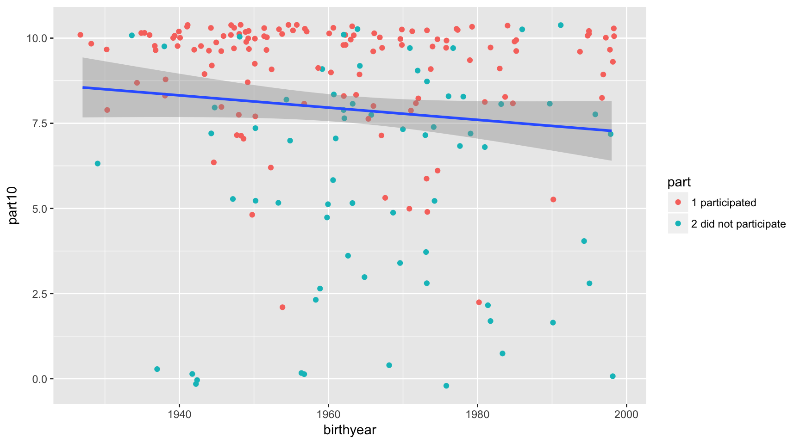
Und in einer letzten Variante interessiert uns noch, ob dieses Muster nach Geschlecht unterschiedlich ist. Dafür machen wir für Frauen und Männer je eine bivariate Regressionslinie.
# Nur bei den Punkten werden wir noch die Farbe reinbringen mit aes(color=part)
ggplot(data=voto, aes(x=birthyear, y=part10, color=part)) +
geom_jitter() +
geom_smooth(method="lm")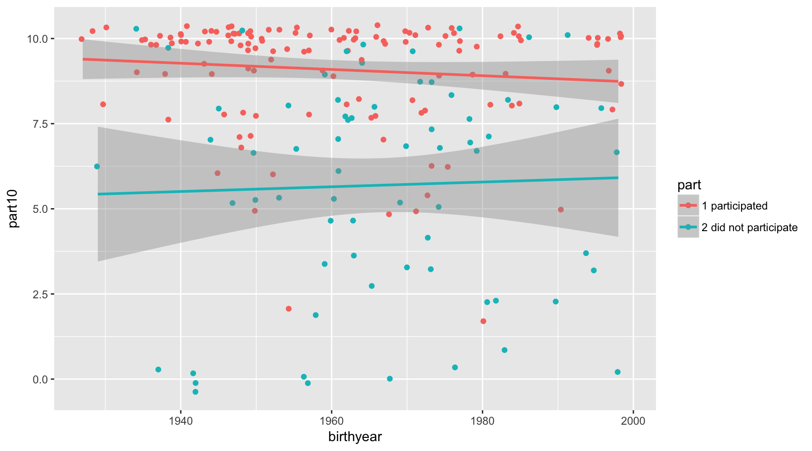
12.4 Grafiken speichern
Sollen die Grafiken schliesslich gespeichert werden, bietet ggplot2 mit ggsave() einen einfachen Befehl an. Dieser Befehl nimmt als Normaleinstellung die letzte produzierte Grafik und speichert sie im aktuellen Arbeitsordner ab:
ggsave("plottitle.pdf", # Dateiname der zu speichernden Grafik
dpi=300, # Auflösung, von 72 (Minimum) bis 300
units=c("cm"), # Genutzte Masse für Dateigrösse, cm/mm/in
width=10, height=10) # Breite und Grösse der Grafik.12.5 Zusammenfassung
Daten können also aus vielen verschiedenen Blickwinkeln betrachtet und somit analysiert werden. Tabellen und Grafiken sind dabei erste Möglichkeiten, um grosse Datensätze - teilweise mit mehreren hundert Variablen und tausende Beobachtungen - in leichter zu interpretierende Informationen zu reduzieren.
Im vorliegenden Fall war die Frage, ob junge Stimmberechtigte und Frauen tatsächlich weniger häufig an Volksabstimmungen teilnehmen. Verschiedene Antworten sind möglich:
- mit den Bar Charts haben wir gesehen, dass absolut betrachtet mehr Frauen teilnehmen als Männer. Wird allerdings nach Geschlecht geschaut, wie der Anteil ist, dann ist die Stimmbeteiligung bei Frauen vergleichsweise tiefer als bei Männer.
- mit dem Scatterplot haben wir Alter und Partizipationshäufigkeit verglichen. Obwohl die Daten mit Vorsicht zu geniessen sind, sehen wir eine Tendenz, dass die Beteiligung bei jüngeren Stimmberechtigten tiefer ist als bei älteren Stimmberechtigten.
- Dieser Effekt scheint vor allem bei Männer stark zu sein - bei den Frauen scheint der Zusammenhang weniger stark ausgeprägt zu sein, d.h. vor allem ältere Männer nehmen vergleichsweise häufiger teil.
Allerdings können wir nicht immer davon ausgehen, dass Datensätze immer so bereitgestellt werden, dass diese direkt auswertbar sind. Deshalb geht es in den nächsten Teilen dieser kurzen Einführung um die Frage, wie Datensätze aufbereitet werden können. Dieser weniger interessante Teil ist dabei mindestens so wichtig wie die Analyse selber: sind die Daten nicht korrekt, beruhen die Auswertungen auf falschen Annahmen, sind Resultate vielleicht dem Zufall geschuldet, und geht viel Zeit verloren, weil die gesamte Arbeit wiederholt werden muss.
Für Grafiken verwenden wir die Package
ggplot2.ggplot2ist nach einem Muster aufgebaut, bei dem zuerst die Grafik perggplot()initiiert wird und in einem nächsten Schritt die geometrische Struktur definiert wird (die erste Ebene, wo tatsächlich etwas dargestellt wird, im ersten Beispielgeom_histogram()). Entweder im ersten oder zweiten Befehl müssen wir dann die Daten sowie die Variablen definieren, welche die Darstellung bestimmen, hier alsodata=voto, aes(x=birthyear). aes steht dabei für “Ästethik”. Anschliessend können mit weiteren Befehlen Titel, Skalen, Farben etc ergänzt werden.